Question 1 [4]
Find, in terms of a, the set of values of x satisfying 2|3x + a| < |2x + 3a|, where a is a positive constant.
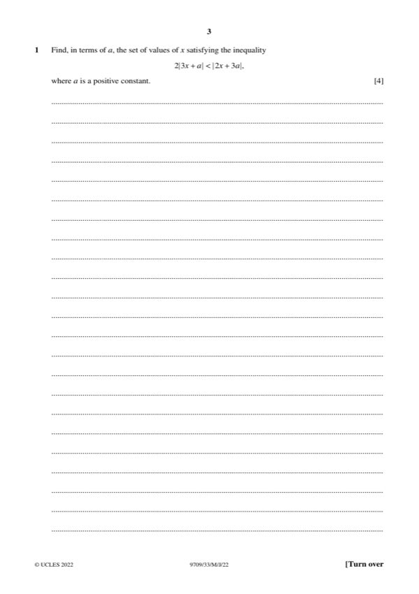
Original paper page 3
Square both sides: 4(3x + a)² < (2x + 3a)²
36x² + 24ax + 4a² < 4x² + 12ax + 9a²
32x² + 12ax − 5a² < 0
Roots: x = (−12a ± 28a)/64 → x = a/4, x = −5a/8
−5a/8 < x < a/4
Question 3 [3 + 2]
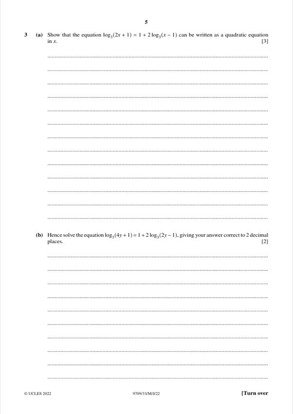
Original paper page 5
(a) [3] Show that log₃(2x + 1) = 1 + 2log₃(x − 1) can be written as a quadratic equation in x.
1 + 2log₃(x − 1) = log₃(3(x − 1)²)
2x + 1 = 3(x − 1)² → 3x² − 8x + 2 = 0
3x² − 8x + 2 = 0
(b) [2] Hence solve log₃(4y + 1) = 1 + 2log₃(2y − 1), giving the answer to 2 d.p.
Put x = 2y: 3(2y)² − 8(2y) + 2 = 0 → 6y² − 8y + 1 = 0
y = (4 ± √10)/6 = 1.19 or 0.140
Need 2y − 1 > 0, so y = 1.19
y = 1.19
Question 4 [4 + 3]
The curve y = e^(−4x) tan x has two stationary points in the interval 0 ≤ x < ½π.
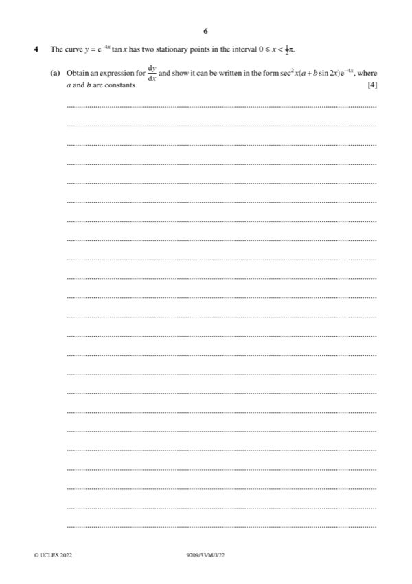
Original paper page 6
(a) [4] Obtain dy/dx and show it can be written as sec²x(a + b sin 2x)e^(−4x).
dy/dx = e^(−4x)(sec²x − 4 tan x)
= sec²x(1 − 4 sin x cos x)e^(−4x)
= sec²x(1 − 2 sin 2x)e^(−4x)
a = 1, b = −2
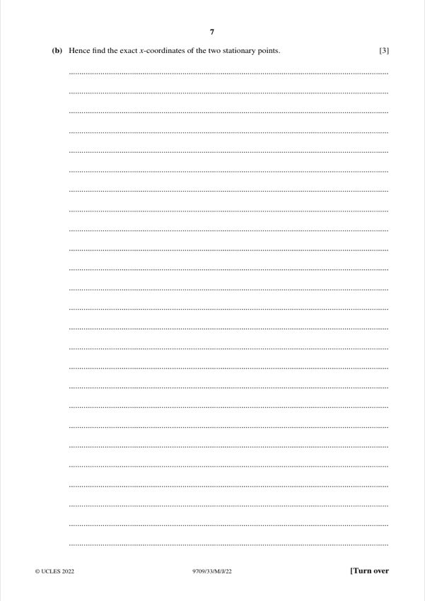
Original paper page 7
(b) [3] Hence find the exact x-coordinates of the two stationary points.
1 − 2 sin 2x = 0 → sin 2x = ½
2x = π/6 or 5π/6 → x = π/12, 5π/12
x = π/12, x = 5π/12
Question 5 [3 + 3 + 3]
The complex number 3 − i is denoted by u.
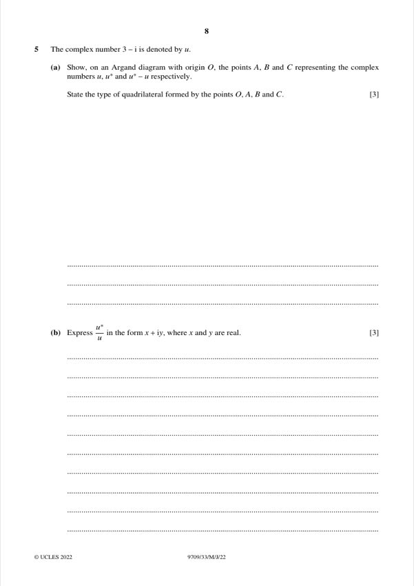
Original paper page 8
(a) [3] Show on an Argand diagram the points A, B, C representing u, u*, u* − u. State the type of quadrilateral formed by O, A, B, C.
A = (3, −1), B = (3, 1), C = (0, 2)
OA = (3, −1) and CB = (3, −1) are equal, so OA ∥ CB; AB = (0, 2) and OC = (0, 2) are equal, so AB ∥ OC.
Parallelogram
(b) [3] Express u*/u in the form x + iy.
u*/u = (3 + i)/(3 − i) = (3 + i)²/10 = (8 + 6i)/10
u*/u = 4/5 + (3/5)i
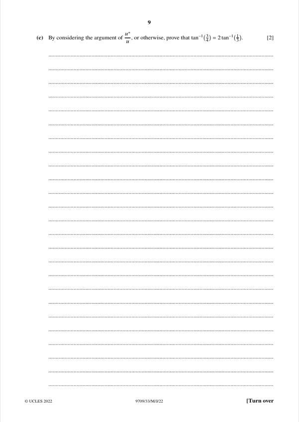
Original paper page 9
(c) [2] By considering the argument of u*/u, or otherwise, prove that tan⁻¹(3/4) = 2 tan⁻¹(1/3).
arg(u*/u) = 2 arg(u*) = 2 tan⁻¹(1/3)
arg(u*/u) = tan⁻¹((3/5)/(4/5)) = tan⁻¹(3/4)
tan⁻¹(3/4) = 2 tan⁻¹(1/3)
Question 6 [5 + 3]
The parametric equations of a curve are x = 1/cos t, y = ln tan t, where 0 < t < ½π.
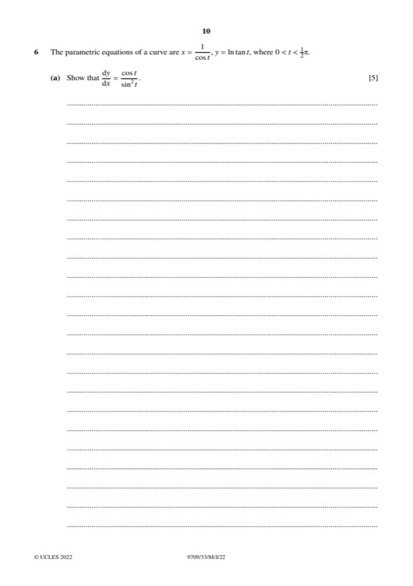
Original paper page 10
(a) [5] Show that dy/dx = cos t / sin²t.
dx/dt = sec t tan t, dy/dt = 1/(sin t cos t)
dy/dx = (1/(sin t cos t)) ÷ (sin t/cos²t) = cos t / sin²t
Shown
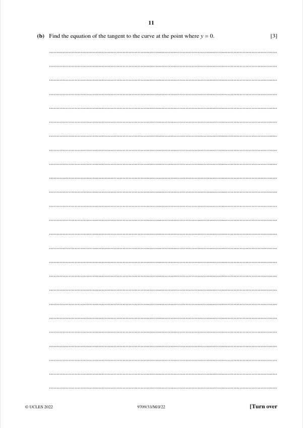
Original paper page 11
(b) [3] Find the equation of the tangent at the point where y = 0.
y = 0 → tan t = 1 → t = π/4
x = √2, dy/dx = (√2/2)/(1/2) = √2
y = √2(x − √2) → y = √2x − 2
y = √2 x − 2
Question 7 [5 + 4 + 2]
Let f(x) = (5x² + 8x − 3)/((x − 2)(2x² + 3)).
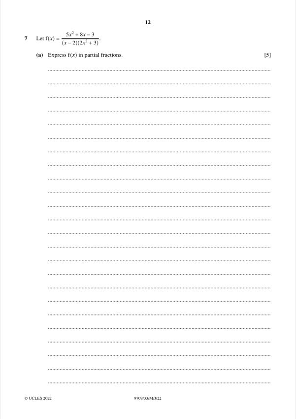
Original paper page 12
(a) [5] Express f(x) in partial fractions.
f(x) = A/(x − 2) + (Bx + C)/(2x² + 3)
A = 33/11 = 3
5x² + 8x − 3 = 3(2x² + 3) + (Bx + C)(x − 2) → B = −1, C = 6
f(x) = 3/(x − 2) + (6 − x)/(2x² + 3)
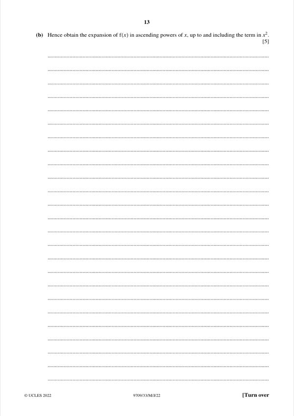
Original paper page 13
(b) [4] Hence obtain the expansion of f(x) in ascending powers of x, up to and including the term in x².
3/(x − 2) = −(3/2)(1 + x/2 + x²/4 + …) = −3/2 − (3/4)x − (3/8)x²
(6 − x)/(2x² + 3) = 2 − x/3 − (4/3)x² + …
Sum: ½ − (13/12)x − (41/24)x²
½ − (13/12)x − (41/24)x²
(c) [2] State the range of values of x for which this expansion is valid.
1/(x − 2) needs |x| < 2; 1/(2x² + 3) needs |2x²/3| < 1, i.e. |x| < √(3/2). The stricter condition applies.
|x| < √(3/2)
Question 8 [5 + 2 + 3]
At time t days, the number of insects N satisfies dN/dt = kN^(2/3) cos 0.02t, where k is a constant. When t = 0, N = 100.
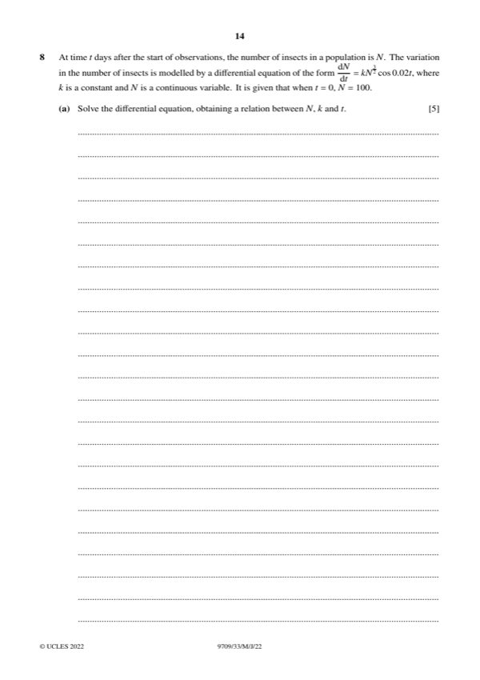
Original paper page 14
(a) [5] Solve the differential equation, obtaining a relation between N, k and t.
∫N^(−2/3) dN = ∫k cos 0.02t dt
3N^(1/3) = 50k sin 0.02t + C
At t = 0, N = 100: C = 3·100^(1/3)
3N^(1/3) − 3·100^(1/3) = 50k sin 0.02t
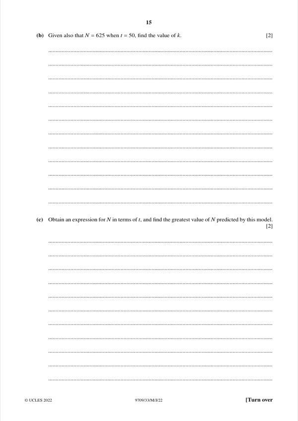
Original paper page 15
(b) [2] Given also that N = 625 when t = 50, find k.
3(625)^(1/3) − 3(100)^(1/3) = 50k sin 1
25.649 − 13.925 = 42.07k → k = 0.279
k = 0.279
(c) [3] Obtain an expression for N in terms of t, and find the greatest value of N predicted by this model.
N^(1/3) = 100^(1/3) + (50k/3) sin 0.02t
Greatest when sin 0.02t = 1: N^(1/3) = 4.642 + 4.645 = 9.287
N_max = 801
N = (4.642 + 4.645 sin 0.02t)³, greatest N = 801
Question 9 [3 + 4 + 2]
With respect to the origin O, the point A has position vector i + 5j + 6k. The line l has vector equation r = 4i + k + λ(−i + 2j + 3k).
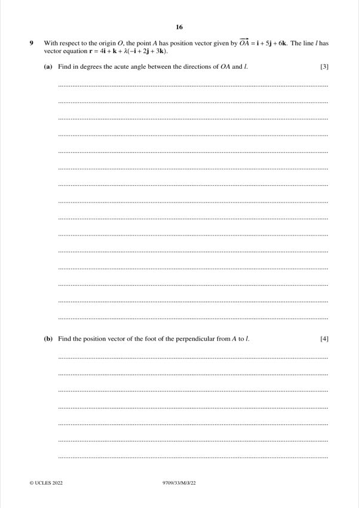
Original paper page 16
(a) [3] Find, in degrees, the acute angle between the directions of OA and l.
cos θ = (1 + 10 + 18)/(√62 · √14) = 27/29.47 = 0.9163
θ = 23.6°
23.6°
(b) [4] Find the position vector of the foot of the perpendicular from A to l.
Point on l: P = (4 − λ, 2λ, 1 + 3λ). AP·d = 0:
−(3 − λ) + 2(2λ − 5) + 3(3λ − 5) = 0 → λ = 2
P = (2, 4, 7)
2i + 4j + 7k
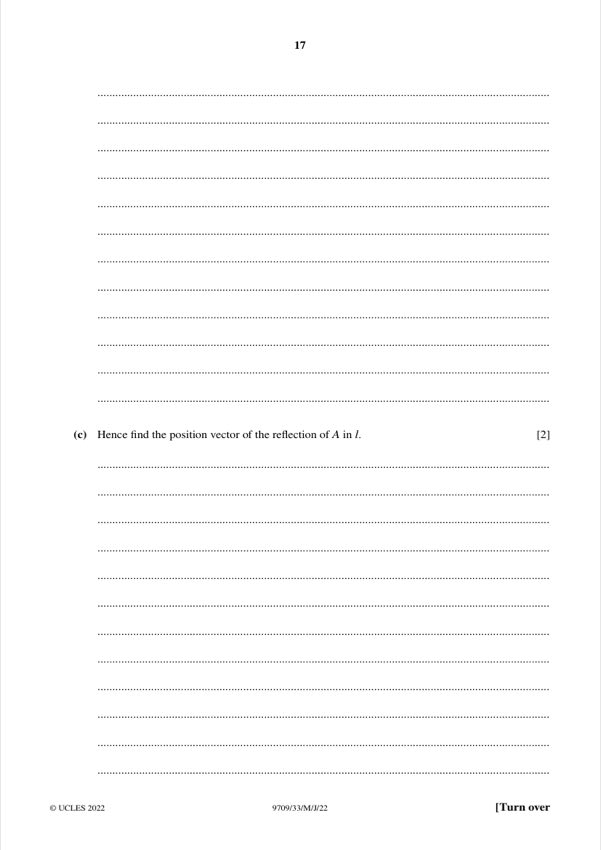
Original paper page 17
(c) [2] Hence find the position vector of the reflection of A in l.
Reflection = 2P − A = (4 − 1, 8 − 5, 14 − 6)
3i + 3j + 8k
Question 10 [5 + 2 + 3]
The constant a is such that ∫₁ᵃ x² ln x dx = 4.
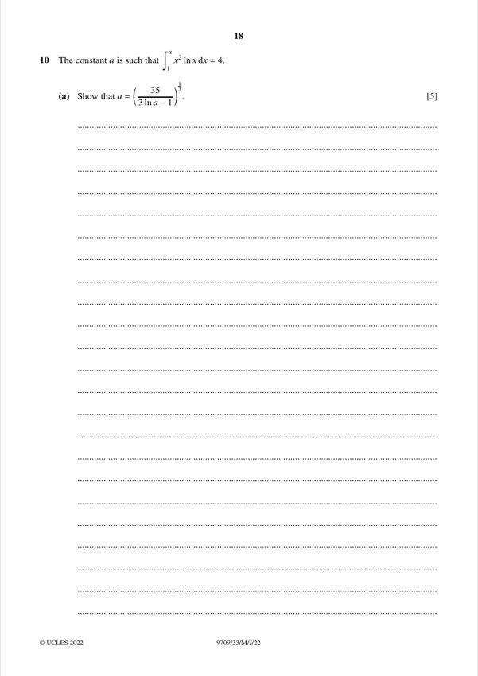
Original paper page 18
(a) [5] Show that a = (35/(3 ln a − 1))^(1/3).
∫x² ln x dx = (x³/3) ln x − x³/9
[(a³/3) ln a − a³/9] − [0 − 1/9] = 4
3a³ ln a − a³ + 1 = 36 → a³(3 ln a − 1) = 35
Shown
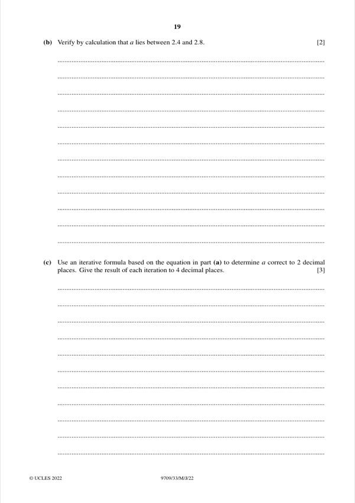
Original paper page 19
(b) [2] Verify by calculation that a lies between 2.4 and 2.8.
g(a) = a³(3 ln a − 1) − 35
g(2.4) = 13.824 × 1.6265 − 35 = −12.5 < 0
g(2.8) = 21.952 × 2.0888 − 35 = 10.9 > 0
Sign change, so 2.4 < a < 2.8
(c) [3] Use an iterative formula based on part (a) to find a correct to 2 d.p. Give each iteration to 4 d.p.
a₀ = 2.6
a₁ = 2.6571
a₂ = 2.6262
a₃ = 2.6404
a₄ = 2.6350 ... converges to 2.6357
a = 2.64